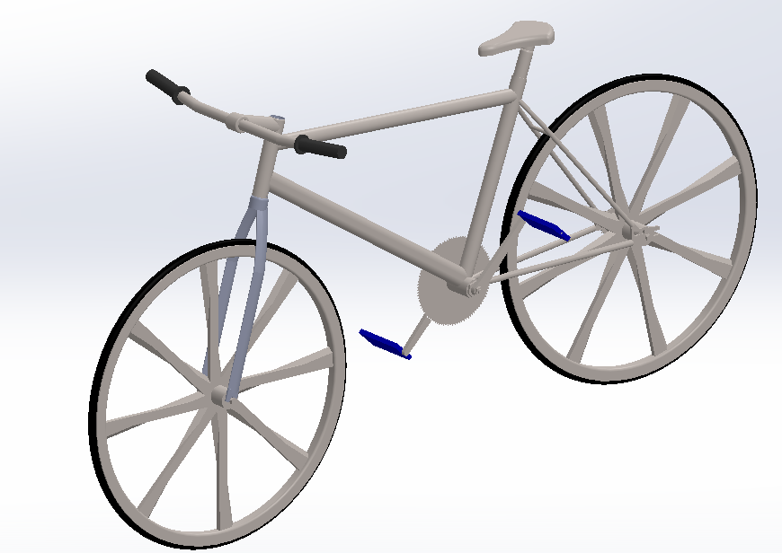
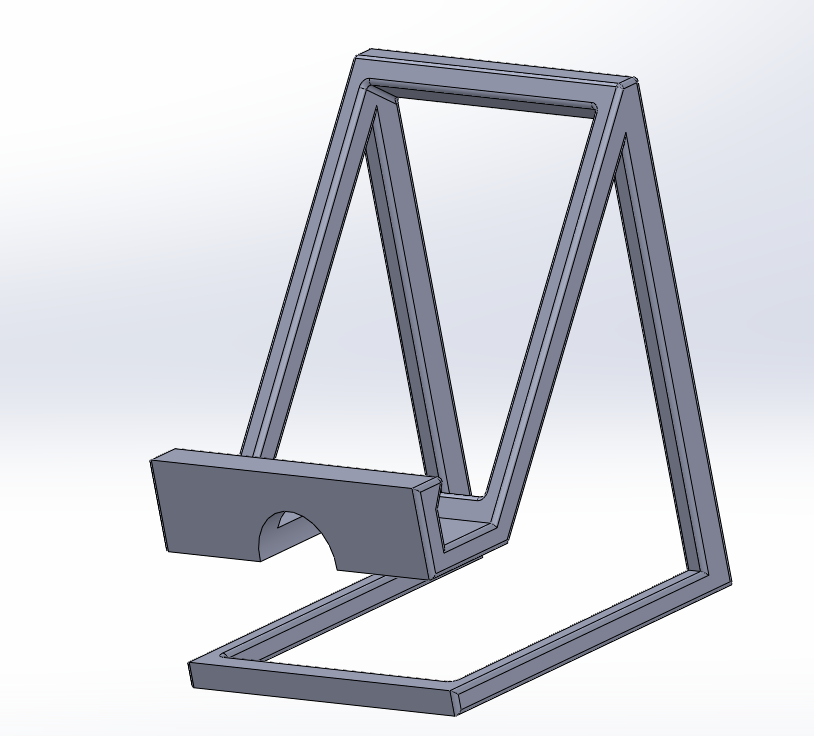
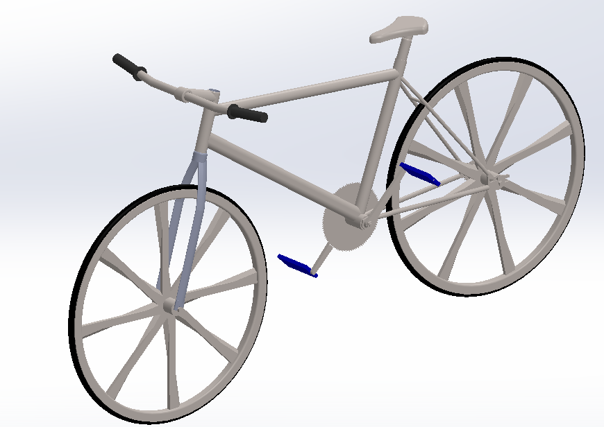
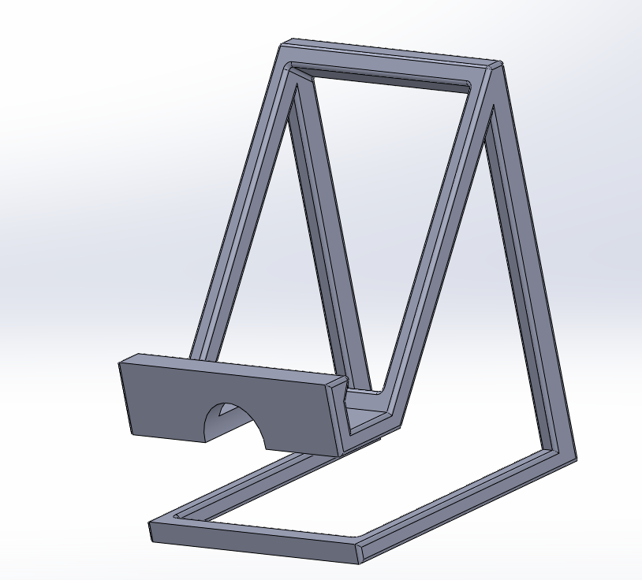

Project Gallery
LIDAR Poster

Sensor Control for Exoskeleton Boot

3D Model of a Bicycle for FEA Class
Phone Stand
Mechanical Engineering Student
Fourth-year mechanical engineering student at The City College of New York with strong analytical training in AI/ML, finite element analysis, fluid mechanics, heat transfer, and materials science. Experienced in CAD design, optical system optimization, and Arduino-based sensor systems. Currently working on wearable exoskeleton technology at the BIOWEAR Lab. Passionate about applying engineering principles to solve real-world problems through research and innovation.
Technical Skills And Software
Developing Arduino-controlled sensing system for a wearable exoskeleton at BIOWEAR Lab. Designed multiplexer layouts to interface multiple sensors with a single microcontroller, measuring resistance and force at various points. Created 3D CAD models for sensor and electronics enclosures optimized for protection, ergonomics, and ease of assembly.
Improved LiDAR accuracy using Varioptic liquid lenses and a two-lens optical system through NSF REU program. Simulated and optimized optical configurations using Zemax and MATLAB. Enhanced signal processing algorithms for detecting small, fast-moving targets. Optimized LabVIEW routines for real-time data acquisition and control.
Simulated and optimized LiDAR optical systems using Zemax and MATLAB during the MobilizeGreen Fellowship. Collected and analyzed experimental data to select optimal optical configurations. Compared simulated versus measured results and recommended design adjustments based on performance trade-offs.
Developed methodology for ranking AI models using the Gini Coefficient as a performance metric. Conducted statistical analysis and interpretation of ranking metrics. Presented research findings at the Joint Mathematics Meeting, demonstrating novel approach to model evaluation and selection.
Presented research on improving LiDAR precision using Varioptic liquid lenses and a two-lens system, highlighting modeling, experimental validation, and data analysis.
Presented research on using the Gini Coefficient to rank AI models, including methodology, statistical analysis, and interpretation of ranking metrics.
LIDAR Poster
Sensor Control for Exoskeleton Boot
3D Model of a Bicycle for FEA Class
Phone Stand
Designed and fabricated custom workspace organizers using CAD and 3D printing. Created phone stands, laptop stands, and tool organizers optimized for ergonomics and efficient use of space. Each piece is iteratively refined based on daily use and practical feedback.
Build and fly various types of FPV (First-Person View) drones, from racing quads to freestyle rigs. Experience with drone assembly, flight controller tuning, soldering electronics, and troubleshooting technical issues. Passionate about the intersection of mechanical design, electronics, and flight dynamics.